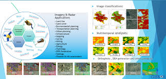
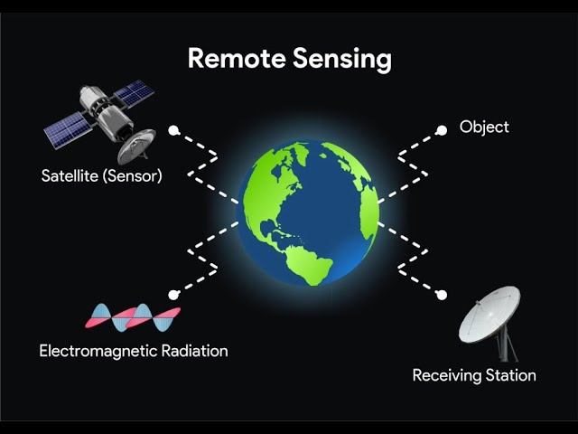

Understanding Remote Sensing Techniques
Published on August 15, 2024 by Aanchal Choudhary

Remote sensing involves the use of various technologies to observe and measure objects without being in direct contact with them. This article explores different remote sensing techniques and their applications...
Read More
Leave a Comment
The Future of Microwave Remote Sensing
Published on August 10, 2024 by Aanchal Choudhary
Microwave remote sensing is rapidly evolving, offering new insights into Earth's atmosphere and surface. Discover how advancements in this field are shaping the future of environmental monitoring...
Read MoreLeave a Comment
Applications of Remote Sensing in Agriculture
Published on August 12, 2024 by Aanchal Choudhary
Remote sensing involves the use of various technologies to observe and measure objects without being in direct contact with them. This article explores different remote sensing techniques and their applications. It also discusses how advancements in this field are helping to improve environmental monitoring and mapping processes.
Read MoreLeave a Comment
Challenges in Microwave Remote Sensing
Published on August 14, 2024 by Aanchal Choudhary

Remote sensing involves the use of various technologies to observe and measure objects without being in direct contact with them. This article explores different remote sensing techniques and their applications. It also discusses how advancements in this field are helping to improve environmental monitoring and mapping processes.
Read MoreLeave a Comment
Remote Sensing and Climate Change
Published on August 16, 2024 by Aanchal Choudhary
Remote sensing involves the use of various technologies to observe and measure objects without being in direct contact with them. This article explores different remote sensing techniques and their applications. It also discusses how advancements in this field are helping to improve environmental monitoring and mapping processes.
Read MoreLeave a Comment